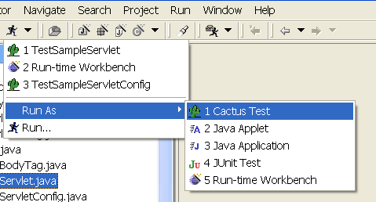

Overview
The
Eclipse
plug-in for Cactus is a runner for server-side unit tests. It is
intended to hide the complexity of setting up an environment for
running Cactus tests. It supports a variety of commercial and
open-source application servers (better called containers).
Features
Installation
Using
What's next
Developer's corner
Features
-
Adds a shortcut for Cactus tests launching.

-
Relies on the Eclipse Ant integration to :
-
deploy the application
-
start the container before running the tests
-
stop the container when tests have ended
-
Integrated Jetty container support
-
Cactus preference page
-
Port on which the container is started.
-
Working directory where the Cactus plugin will create temporary
files (packaged war, container configuration files, etc).
-
Support for several containers
-
The user can provide its own web.xml file. If this is not the case
the plug-in will use the one by default.
-
Relies on the JUnit plug-in for test runs and result reports.
-
Cactify a Java project : adds client-side jars to a project's
build path.
Installation
Requirements
The Cactus plugin requires a version of the Eclipse platform later
than 2.1.
Installation
Uncompress the zip file and copy the
org.apache.cactus.integration.eclipse_[version] folder
to your Eclipse plugins folder and restart Eclipse.
Configuration
Go to Window -> Preferences -> Cactus and set your preferences.
Using
Select any Cactus test class and from the toolbar do :
Run As -> Cactus Test
What's next
In order to release a production-quality tool some features are needed.
See the todo section on the Cactus framework page for a list of
remaining features
Developer's corner
Overview of the plug-in
The Cactus framework extends JUnit. The Cactus
plugin for Eclipse extends in a certain manner the existing JUnit
plugin. For example
JUnitLaunchShortcut
is overloaded to be able to:
-
prepare tests: set up the container (deployment) and start it
up
- execute tests using the JUnit plugin
-
tear down tests: stop the container and clean the deployment.
The plugin uses Ant scripts from the Ant integration subproject for
container management.
How it works
Extension points
-
org.eclipse.debug.core.launchConfigurationTypes
registers cactusLaunchConfiguration
-
org.eclipse.debug.ui.launchShortcuts
registers a shortcut which appears in the run and debug
cascade menus to launch the current workbench selection in the
Java perspective
-
org.eclipse.ui.preferencePages
adds the Cactus preference page to the preferences.
GUI: preference page
A preference page is contributed to the Eclipse preferences. It
shows the following entries:
- Cactus properties (contextURL)
-
directory of all the jars needed for Cactus tests (client
side and server side)
- setting of the container homes
IContainerProvider
To enable different ways to setup, start, and stop containers the
idea of container providers has been introduced in the plugin.
A container provider is responsible for deploying a web application
to the container, starting and stopping it, and undeploying the web
app. This concept is concretized in the interface
IContainerProvider
. See its javadoc for more information.
A container manager is implemented in the current version of the
plugin, which uses Ant scripts to carry out these actions. It is
called
AntContainerManager
and may be used to execute tests on all the containers supported
by the Ant integration subproject.
What happens when a test is launched
The
launch(IType theType, String theMode)
method of the
CactusLaunchShortcut
class is called, which sets up the container, launches the
tests by delegating these to the JUnit plugin, and then tears down
the container setup.
-
Tests preparation
This includes:
-
creating the war file for the cactus tests: this is
done in a call to the
Webapp
plug-in
WarBuilder class.
-
setting up the container: prepares the configuration
for the selected container
-
starting the container.
In the case of
AntContainerProvider
:
-
setting up is done by an Ant script
-
starting the container is delegated to the
StartServerHelper
class, which initiates a thread starting the container
and then pings it constantly to see if it has effectively
been launched.
-
Tests launch
This behaviour is inherited from the JUnit plugin since
CactusLaunchShortcut
extends
JUnitLaunchShortcut
.
-
Tests end
To know when tests have ended we register our TestListener to
the JUnit plugin. To this end the JUnit plugin needed a
modification which has been integrated in the 2.1 release of
the Eclipse platform.
-
Test environment cleaning
After the tests have completed we stop the container, and
delete the configuration and war files created beforehand.
|